Every lecture slide, shown in full — then explained the way a tutor would at the whiteboard: the mechanism, the why, the clinical consequence and the connections the slide leaves unsaid. The slide gives you the fact; the note underneath tells you what it means.
Covers 53 slides · 8 partsFigures the lecture's own slidesSelf-tests interactive recall
How to use this guide
Each slide is shown in full (click to enlarge and read the fine labels). The text below it is not a re-caption — it adds the mechanism, the reasoning and the clinical angle that the slide doesn't print, and links each fact to the others. The coloured notes flag the asides:
Why / mechanism The reasoning the slide assumes you'll supply — form, force and function.
Exam hook The discriminating fact or trick that earns the mark.
Clinical What this looks like on a real patient — and why.
§0Scope of the lecture
Learning outcomes
Six outcomes — and the one thread that ties them together.
The deck runs anatomy first (outcomes 1–4), then embryology (5–6). The thread worth holding: the same developmental story — somites, sclerotome, the notochord, resegmentation — explains both the finished adult anatomy and every abnormality at the end. Learn §6 well and §1–§5 and §7 largely explain themselves.
SLIDE 2Learning outcomes
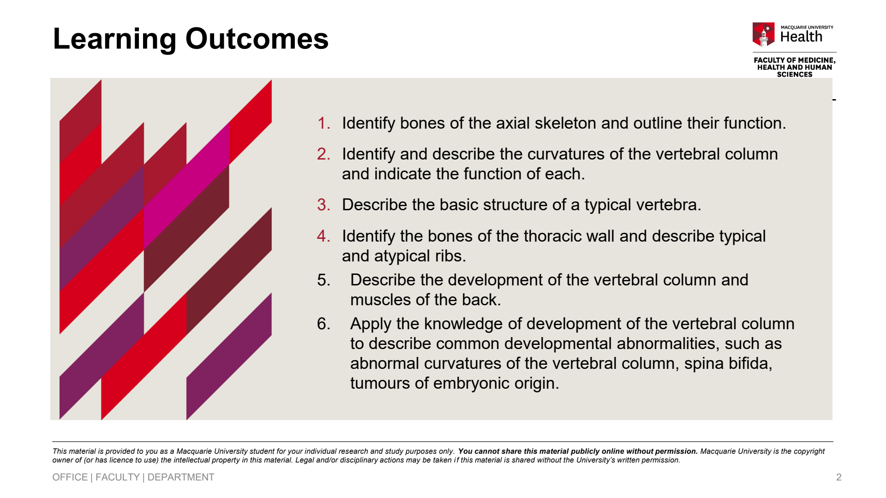
Notice the verbs rising in difficulty: outcomes 1–3 ask you to identify and describe (recognition), while 5–6 ask you to describe development and then apply it to explain disease. That last verb is where the marks sit — being able to reason from a failed embryological step to the deformity it produces, not just name the deformity.
§1LO1 · Bones of the axial skeleton
The axial skeleton
A protective core, and a developmental half of the skeleton.
"Axial" versus "appendicular" is not just a map of where the bones are — it's where they come from and what they're for.
SLIDE 4Axial vs appendicular skeleton
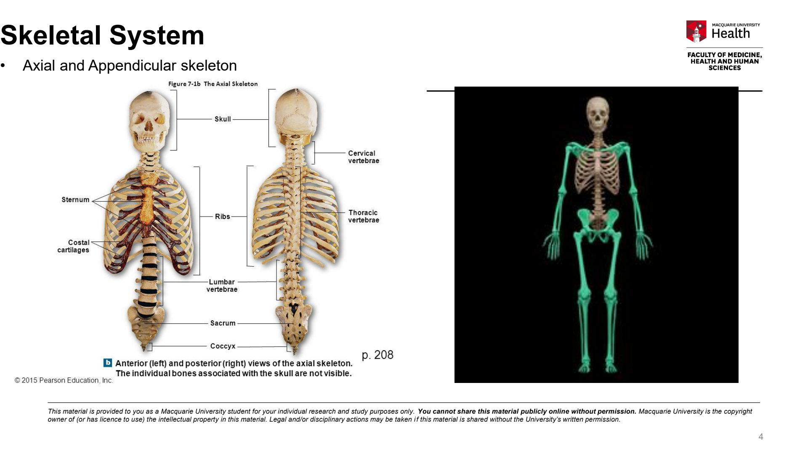
The division is really a developmental one. The axial skeleton forms in the midline from paraxial mesoderm (the somites you'll meet in §6), and its job is overwhelmingly protection and support — the skull cages the brain, the vertebral column the cord, the ribs the heart and lungs. The appendicular skeleton grows from lateral plate mesoderm out in the limb buds, and is built for movement and manipulation. Keep that origin in mind — it's exactly why somite defects (§7) hit the spine and ribs but spare the limb bones.
SLIDE 5Bones of the axial skeleton — the count
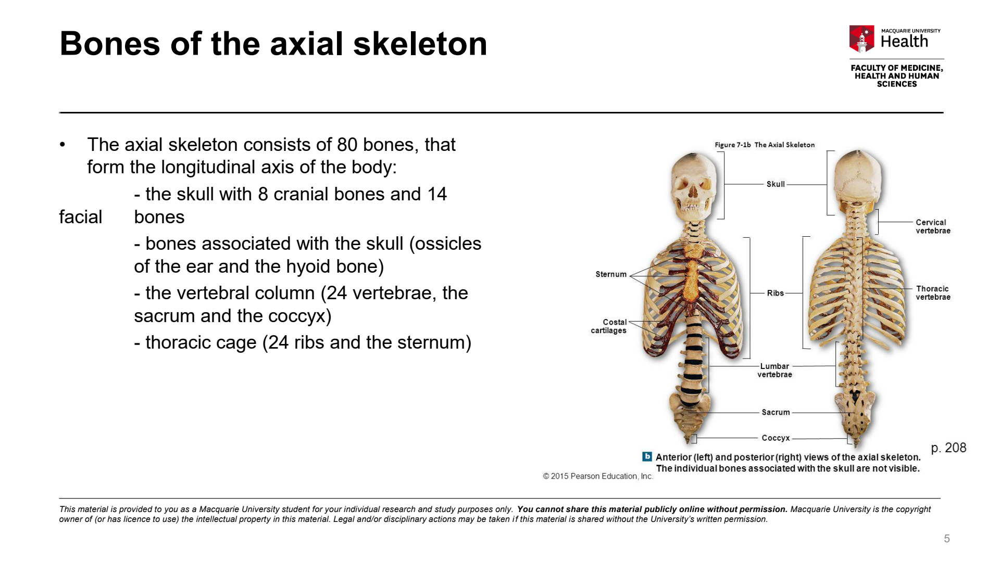
The "24 vertebrae" in this 80-bone tally counts only the separate presacral vertebrae; the sacrum and coccyx are logged once each because they're fused blocks — a counting convention worth getting straight before an MCQ tries to trip you on it.
Exam hook · two freebies not on the slide
The hyoid is the only bone in the body that articulates with no other bone — it's slung in the neck by muscles and ligaments. And the ear ossicles are axial bones whose job is purely mechanical — transmitting sound. Both are favourite "odd one out" questions.
§2Regions · muscles · function
The vertebral column — overview
Why it's regionalised, who moves it, and the trade-offs it manages.
Three questions set up the rest of the lecture: how the column is regionalised, the muscles that drive it, and the competing jobs every vertebra has to reconcile.
SLIDE 633 vertebrae in 5 regions
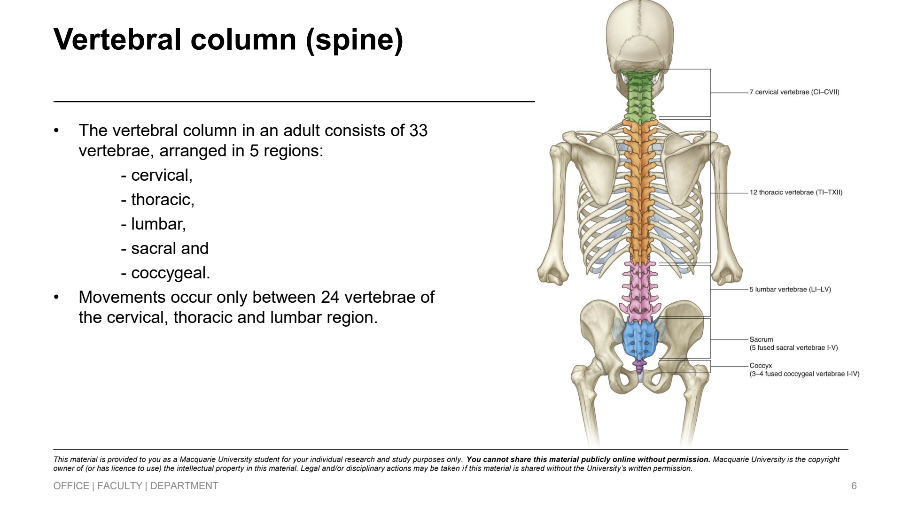
Only 24 vertebrae move because the sacrum and coccyx have fused on purpose: the sacrum is the keystone of the pelvic ring and has to be a rigid platform to hand body weight off to the hip bones — mobility there would be a liability. So the column trades flexibility for stability exactly where it transmits load, and keeps mobility where it needs reach (neck, lower back). That same logic predicts the regional vertebra shapes in §4.
Exam hook · 7-12-5
7 cervical, 12 thoracic, 5 lumbar — breakfast at 7, lunch at 12, dinner at 5. (Everyone has 7 cervical vertebrae — even a giraffe.)
SLIDE 7Muscles of the back — extrinsic vs intrinsic
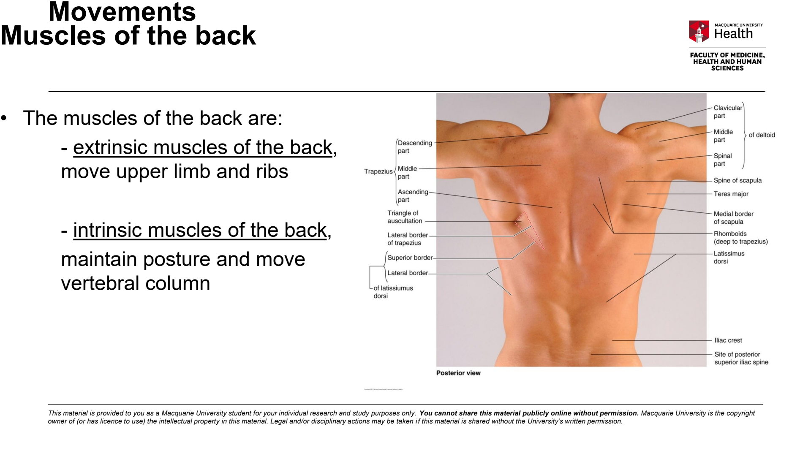
The real reason this distinction matters isn't location — it's innervation, and it comes straight from development (§6). The extrinsic muscles (trapezius, latissimus dorsi and friends) are immigrants: they developed elsewhere and migrated onto the back to work the limb and ribs, so they keep their original ventral-ramus (or cranial-nerve) supply. The intrinsic/true back muscles are natives of the back, and are the only muscles in the whole body supplied by the dorsal rami. If a question asks "dorsal ramus," the answer is always a true back muscle.
SLIDE 8Functions of the vertebral column
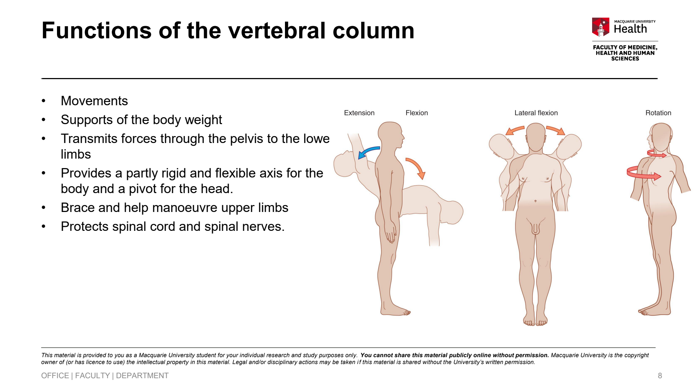
This list is really one engineering compromise. The column must be rigid enough to bear weight, flexible enough to bend and twist, and hollow enough to shield the cord — three demands that fight each other, solved by stacking many small joints around a protected central canal.
Why · the curves and the growing bodies
A straight rod would drive every footfall straight up into the skull; the sagittal curves act as springs, dissipating shock, so a curved column resists far more axial load than a straight one. And the vertebral bodies get progressively bigger top-to-bottom because load accumulates downward — L5 carries almost the whole upper body, so it's the largest. Form is following force.
§3LO2 · Curvatures & their function
Curvatures of the spine
How the curves are made — and the three ways they fail.
The adult's four curves aren't carved into the bones; two are built after birth by the soft tissues. Understanding how they form makes the abnormalities obvious.
SLIDE 10Primary & secondary curvatures
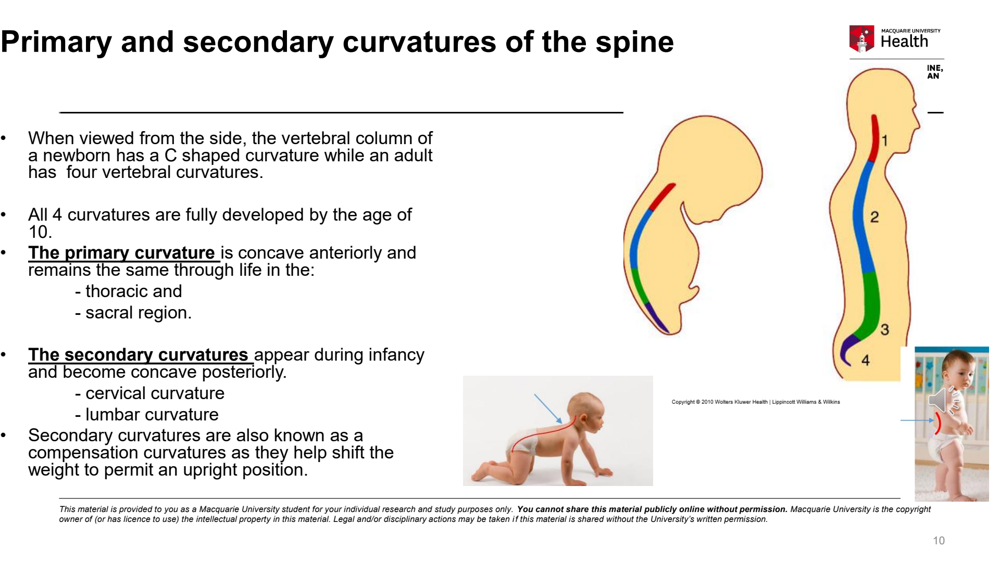
The key point the slide skips: the secondary curves are made by the intervertebral discs wedging anteriorly, not by the vertebrae changing shape. When the baby starts to hold its head up, the cervical discs wedge and the cervical lordosis appears; when it stands and walks, the lumbar discs wedge and the lumbar lordosis appears — each a compensation that shifts the body's weight back over the feet. Because they're disc-dependent, secondary curves can later be lost (flattened) with muscle weakness or ageing, whereas the primary (bone-shaped) curves are permanent.
Exam hook · born vs stood up
Primary = present at birth, concave anteriorly = thoracic + sacral (kyphoses). Secondary = acquired with milestones = cervical + lumbar (lordoses). All four set by age 10.
SLIDE 11Abnormal curvatures — the three patterns
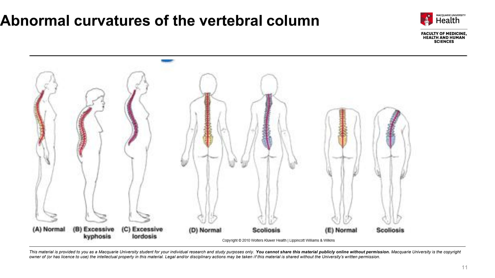
Sort them by plane, because that drives the whole work-up. Kyphosis and lordosis stay in the sagittal plane — they just over-do a normal curve. Scoliosis is categorically different: a lateral curve that's actually three-dimensional, because the vertebrae also rotate. That rotation twists the attached ribs backward on the convex side, which is why bending forward produces the tell-tale rib hump (the Adams forward-bend test — the basis of school screening).
SLIDE 12Scoliosis
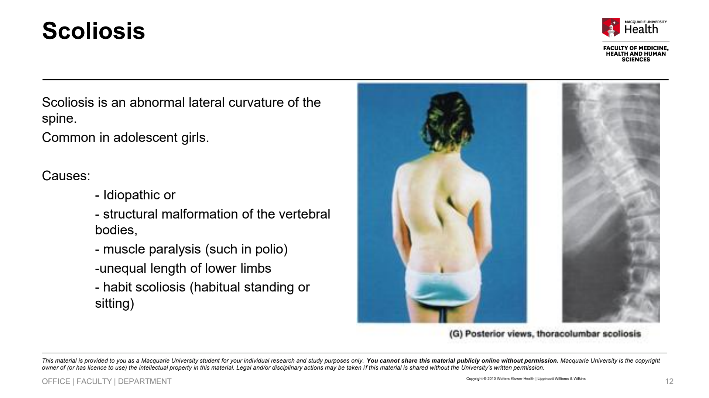
The clinically useful split the slide implies but doesn't state: structural scoliosis (fixed — from a bony/muscular cause, doesn't correct on bending) versus functional/postural scoliosis (e.g. a short leg — the spine tilts to compensate and straightens when you remove the cause or the patient sits). Idiopathic adolescent scoliosis is structural, hits girls around the growth spurt, and can progress fast while bones are still growing — which is the whole reason for screening at puberty. Severity is measured by the Cobb angle.
SLIDE 13Kyphosis & lordosis
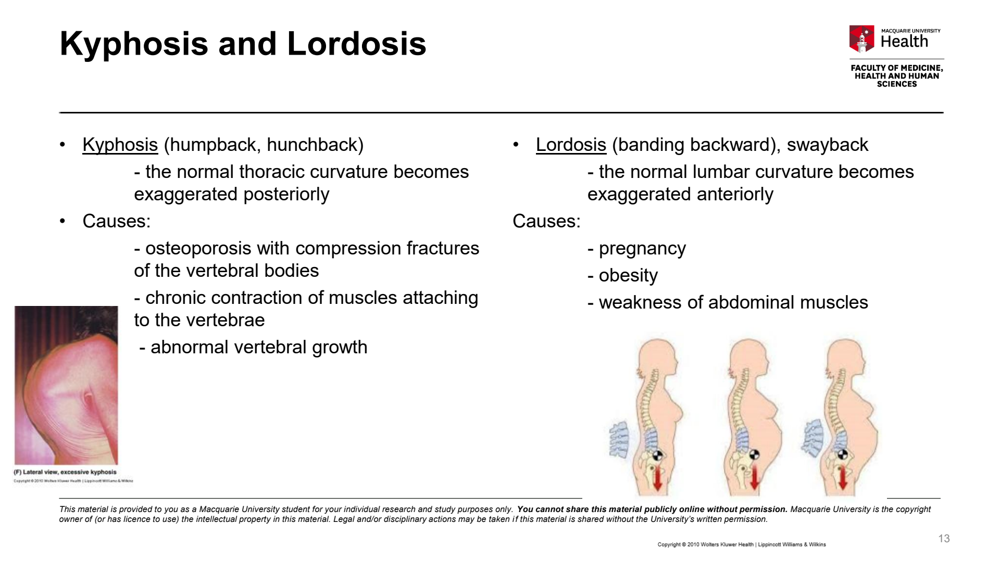
Tie each cause to a mechanism. In osteoporosis the anterior part of the vertebral body crushes first (it's the part loaded in flexion), so the body wedges forward — many small anterior wedge fractures stack into the thoracic kyphosis of the "dowager's hump." Lordosis is a centre-of-gravity problem: a pregnant uterus or a big abdomen pulls the COG forward, so the lumbar spine arches back to keep you balanced over your feet — the very same compensation trick that made the normal lumbar curve.
R Recall — axial skeleton, column & curves
Axial skeleton —80 bones; from paraxial mesoderm; for protection
Only mobile vertebrae — the 24 presacral; sacrum fused for stability
Dorsal-ramus muscles — only the intrinsic (true) back muscles
Primary curves — bone-shaped, from birth: thoracic and sacral
Secondary curves — made by disc wedging with milestones: cervical and lumbar
Scoliosis is — a lateral curve plus rotation (rib hump)
Osteoporotic kyphosis — from anterior vertebral wedge fractures
§4LO3 · Structure of a typical vertebra
The typical vertebra
One template — and the small print that decides how each region moves and fails.
Body in front, arch behind, seven processes between. The next slides build it piece by piece; the value is in what each piece does — and where it breaks.
SLIDE 15Typical vertebra — parts & functions
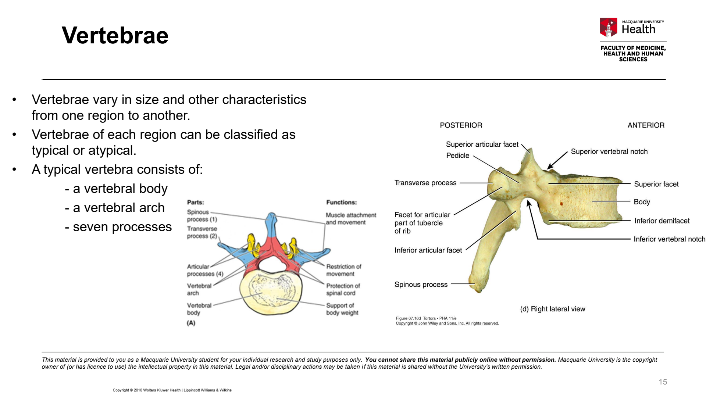
The three regions aren't arbitrary — they correspond to the three developmental origins you'll see in §6: the centrum (body), the neural arch, and the costal element. That's also why each vertebra ossifies from three primary centres, and why regional variation is really the costal element being handled differently from neck to sacrum.
SLIDE 16The vertebral body
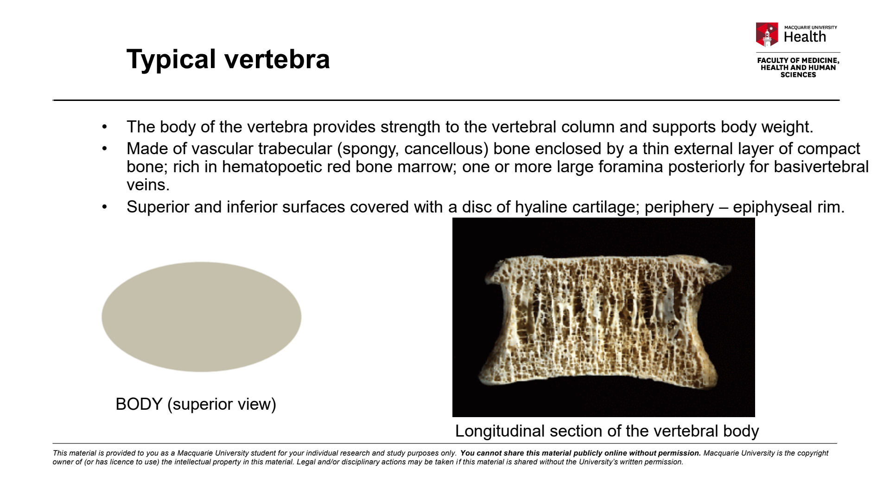
The spongy interior isn't random foam — the trabeculae line up along the lines of stress (Wolff's law), like the struts of a crane, giving maximum strength for minimum weight. Two clinical consequences flow from the body's make-up: it's a major site of adult red marrow, which is why metastases and myeloma love the spine; and the cartilage endplate is avascular, so the disc above it is fed only by slow diffusion — the reason discs degenerate with age and heal so poorly.
§4.1Building the arch — pedicles, laminae, foramen
Watch the vertebral arch close behind the body. Two struts, two plates, one protected tunnel — and three of the most important surgical landmarks in the spine.
SLIDE 17Arch + foramen
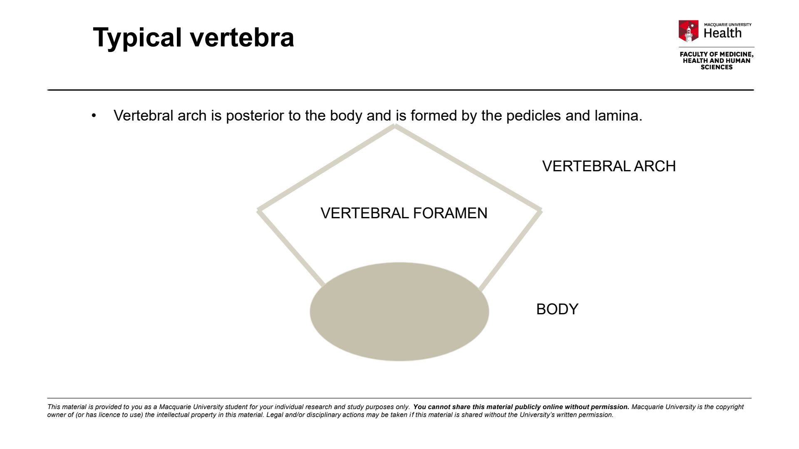
SLIDE 18Pedicles
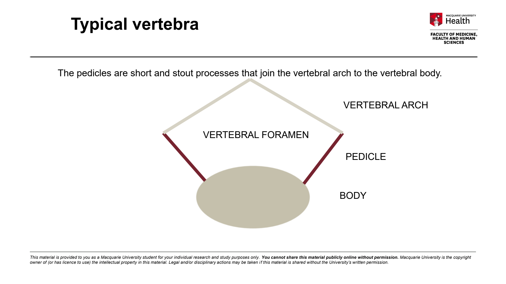
SLIDE 19Laminae
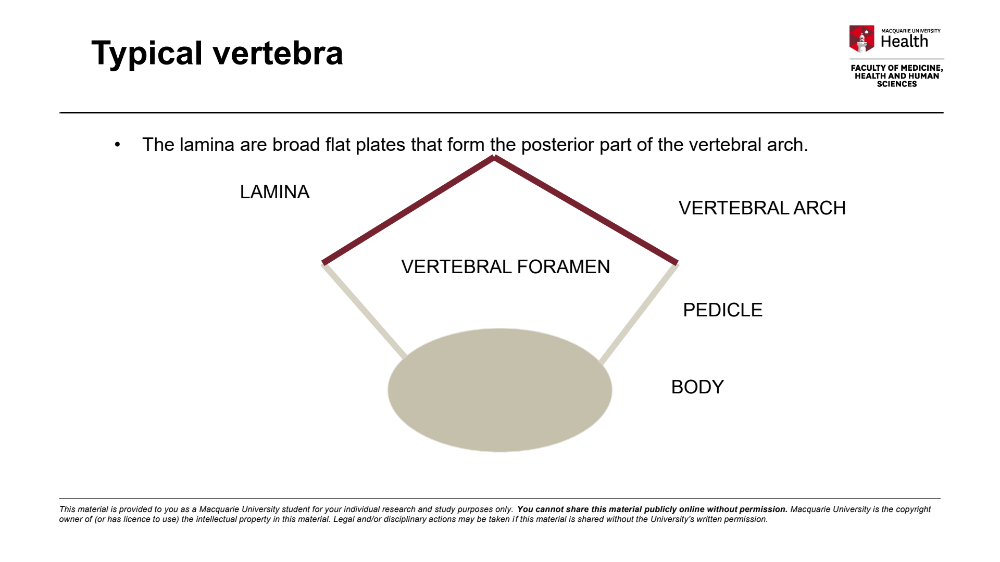
The arch is two pedicles (short, dense struts joining it to the body) and two laminae (flat plates closing it behind), ringing the vertebral foramen; stacked, the foramina make the vertebral canal for the cord. Each part is a named operation or injury: pedicles are the densest bone in the vertebra, so they anchor the pedicle screws of spinal fixation; the lamina is removed in a laminectomy to decompress the cord; and the pars interarticularis (the bridge of bone between the superior and inferior articular processes, just lateral to the lamina) is a stress point.
Clinical · the pars
Repeated hyperextension (gymnasts, fast bowlers, line-backers) stress-fractures the pars = spondylolysis (the "Scottie-dog collar" on an oblique X-ray). If both sides go, the vertebra can slip forward on the one below — spondylolisthesis — a common cause of young-adult back pain and a classic exam image.
§4.2The seven processes — and why regions move differently
Seven processes grow off the arch: one spinous, two transverse, four articular. The slides add them one at a time — but the money is in what the articular ones do.
SLIDE 20Spinous process
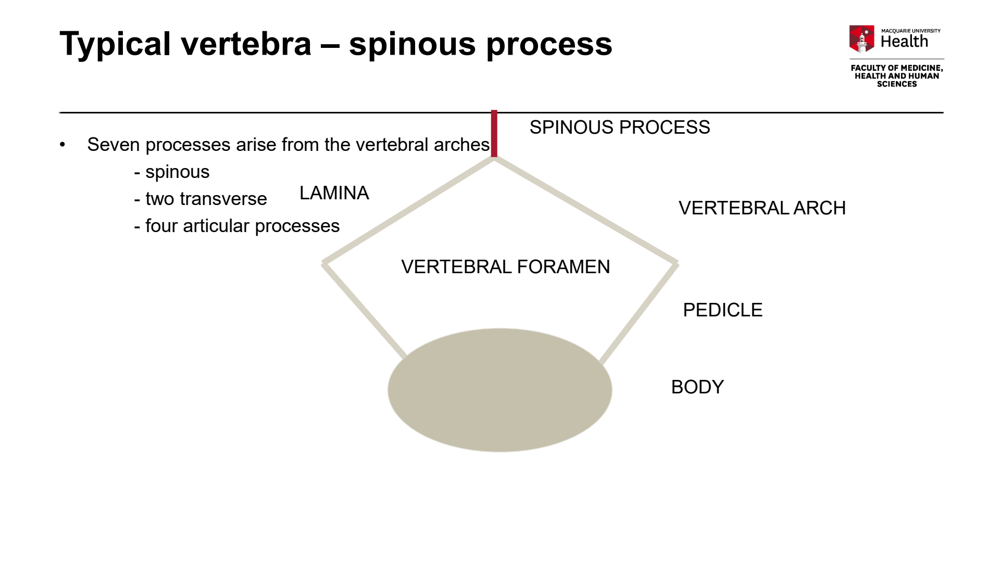
SLIDE 21Transverse processes
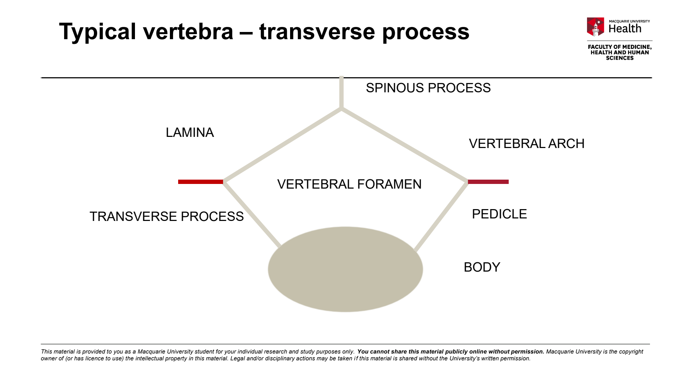
SLIDE 22Superior articular processes
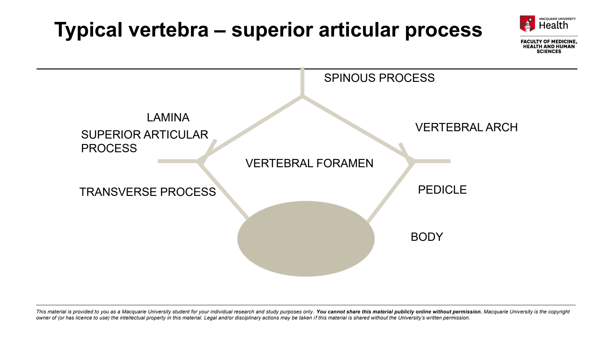
SLIDE 23Inferior articular processes
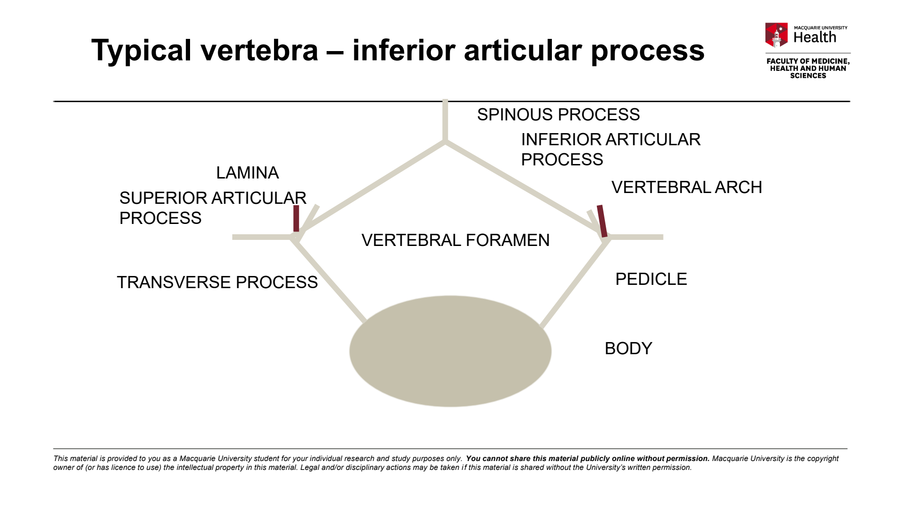
The spinous and transverse processes are lever arms — the further they stick out, the more torque a muscle can generate, but the more they physically block movement (the long, overlapping thoracic spinous processes are part of why the thoracic spine extends so little). The real controller, though, is the orientation of the four articular facets, which acts like a set of rails:
Why · facet orientation = regional movement
Cervical facets lie obliquely (~45°) → lots of flexion, extension and rotation (your most mobile region). Thoracic facets are near-vertical in a coronal arc → they permit rotation but the ribs limit everything else. Lumbar facets curve into the sagittal plane → free flexion/extension but they lock against rotation — which is exactly why forced lumbar twisting injures discs and facets. The facets are the steering, not the spinous processes.
SLIDE 24Typical vertebra — the finished article
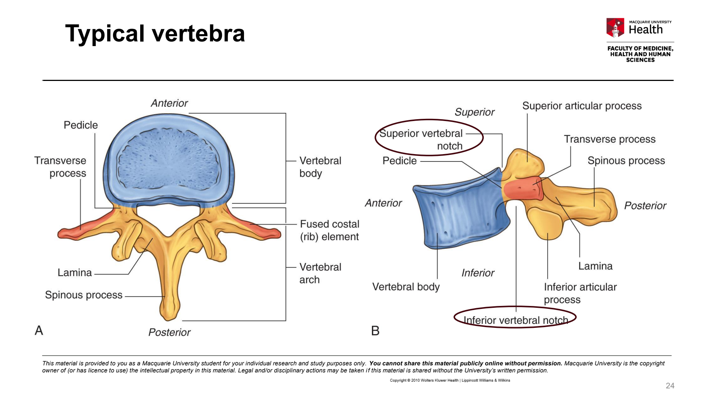
On the lateral (right) view, find the superior and inferior vertebral notches: the inferior notch of one vertebra plus the superior notch of the next frame the intervertebral foramen (next slide). The label "fused costal element" on the transverse process is the ghost of a rib — the same structure that becomes a real rib only in the thorax (§6).
SLIDE 25Vertebral vs intervertebral foramen
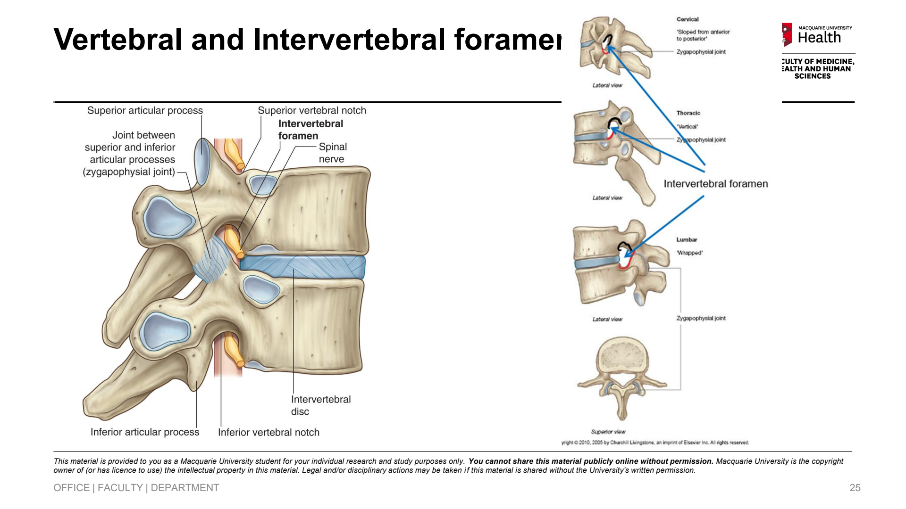
Two foramina, two entirely different contents — a favourite trap. The vertebral foramen (stacked = the canal) carries the spinal cord; the intervertebral foramen, bounded behind by the facet joint, transmits the spinal nerve with its dorsal root ganglion and vessels. Anything that narrows the intervertebral foramen — a posterolateral disc herniation, a facet osteophyte, or simple loss of disc height — pinches the nerve root and gives radiculopathy in that nerve's dermatome and myotome.
Clinical · cord vs cauda equina
The spinal cord ends at about L1/L2 (the conus medullaris); below that the canal holds the cauda equina. So a lumbar disc herniation can't damage the cord — it compresses nerve roots, and a large central prolapse causing saddle anaesthesia and bladder failure is cauda equina syndrome, a surgical emergency.
Don't just memorise the table — each feature earns its place. The cervical foramen transversarium exists to carry the vertebral artery up to the brain (C6 up to C1), so cervical trauma can threaten the posterior cerebral circulation; the bifid spinous anchors the nuchal ligament. The thoracic costal facets are there because ribs articulate — and they're often demi-facets split across two bodies, which is the flip-side of the "rib head has two facets" rule in §5. The large lumbar body is simply built for the biggest load.
Exam hook · name that vertebra
Three-feature triage of a loose vertebra: hole in the transverse process (foramen transversarium) = cervical; costal facets on body/transverse process = thoracic; big kidney-shaped body, no rib facets, stubby horizontal spinous = lumbar.
Facet orientation controls — regional movement (lumbar sagittal blocks rotation)
Pars interarticularis fracture —spondylolysis → spondylolisthesis
Vertebral foramen holds — the cord; intervertebral foramen transmits the spinal nerve
Cord ends at —L1/L2; below is the cauda equina
Foramen transversarium carries — the vertebral artery
§5LO4 · Thoracic wall, typical & atypical ribs
The thoracic wall — ribs & sternum
A protective cage that has to move with every breath.
The thorax is the one part of the axial skeleton built to change shape rhythmically. Read every feature as a compromise between protecting the viscera and working as a bellows.
SLIDE 28Skeleton of the thoracic wall
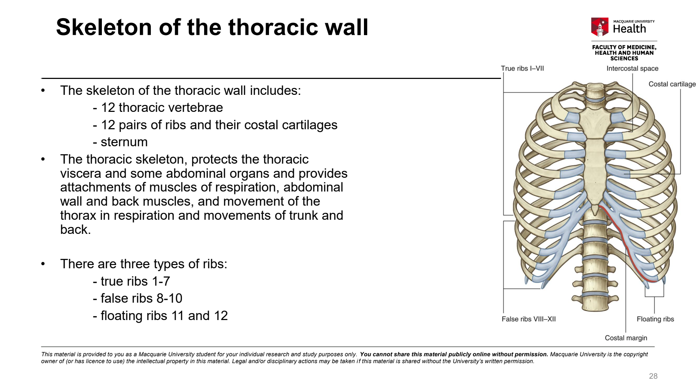
The costal cartilages are what make a rigid cage breathable — they're springs that let the ribs swing and recoil. The upper ribs lift like a pump handle (increasing the front-to-back diameter), the lower ribs swing out like a bucket handle (increasing the side-to-side diameter); together they enlarge the thorax in inspiration. With age those cartilages ossify, the chest stiffens, and the work of breathing rises — part of why respiratory reserve falls in the elderly.
Exam hook · true / false / floating
True 1–7 reach the sternum by their own cartilage; false 8–10 join the cartilage of the rib above; floating 11–12 have no anterior attachment at all.
SLIDE 29Typical ribs (3rd–9th)
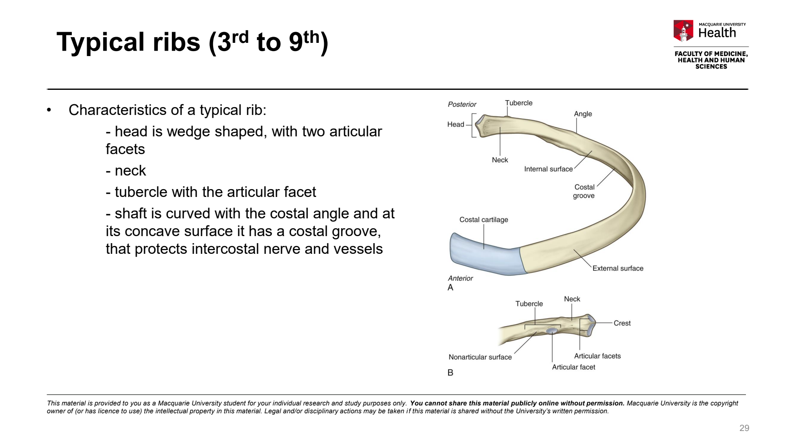
Two features do real clinical work. First, the two facets on the head: a typical rib articulates with its own vertebra and the one above (rib 6 → T6 and T5) — the "same number plus one above" rule. Second, the costal groove on the lower inner border, which shelters the intercostal vein, artery and nerve (VAN, top to bottom).
Clinical · stay above the rib
Because the neurovascular bundle hugs the undersurface of each rib, a chest drain or aspiration needle is passed just above the rib below, through the "safe" lower part of the space — and an intercostal nerve block is deposited into the costal groove. The costal angle is the thinnest part of the shaft and the commonest fracture site.
SLIDE 30Atypical ribs (1st, 2nd, 10th–12th)
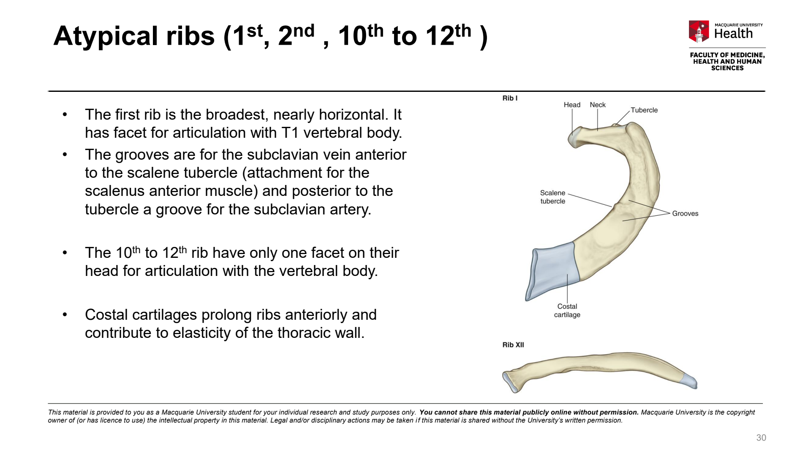
Rib 1 is the clinically loaded one: short, flat and horizontal, it forms the floor of the thoracic outlet, with the subclavian vein crossing in front of the scalene tubercle and the subclavian artery and lower brachial plexus behind it. Because it's so protected under the clavicle, a fractured first rib means high-energy trauma — a flag to hunt for great-vessel injury.
SLIDE 31The sternum
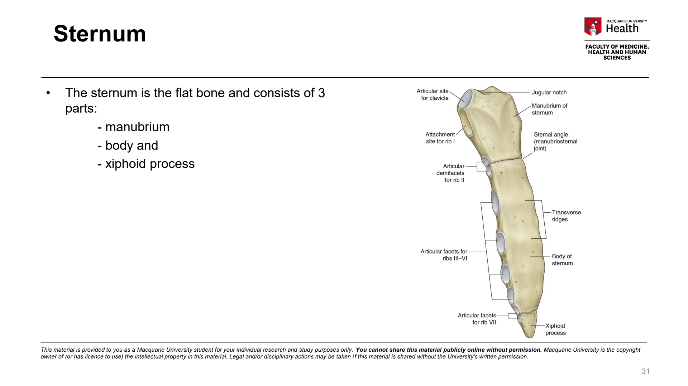
The sternal angle of Louis — the ridge where the manubrium meets the body — is one of the busiest landmarks in the chest: it lies at the 2nd rib (so you count ribs from it), the T4/5 disc, the carina (tracheal bifurcation), and the start and end of the aortic arch. The sternum itself is accessible flat bone full of red marrow — hence sternal marrow aspiration — and the route for a median sternotomy in cardiac surgery; CPR compressions go on the body, above the xiphoid.
SLIDE 32Thoracic wall — costovertebral joints
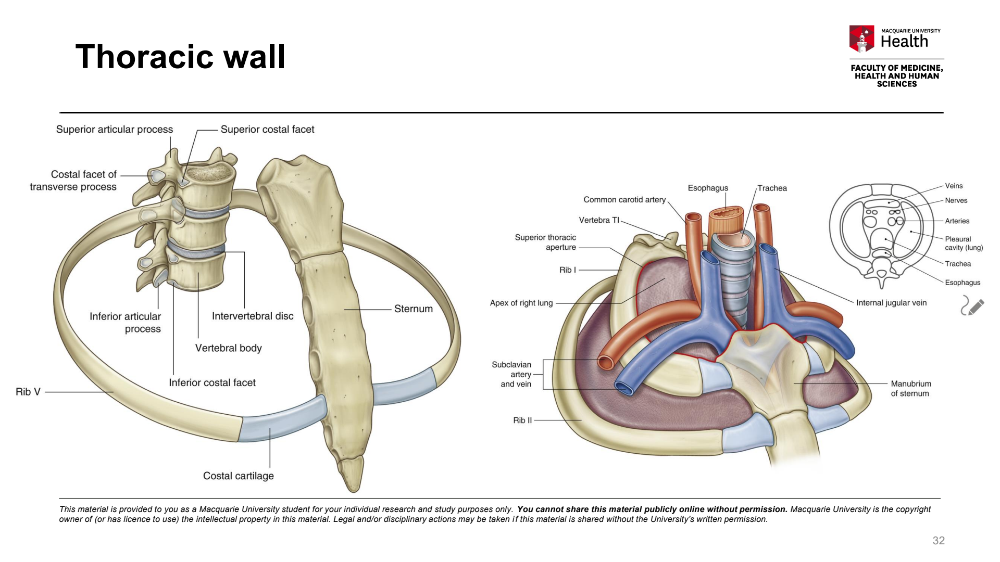
Now the two head-facets make sense: the rib head meets two vertebral bodies (the costovertebral joint) while the tubercle meets the transverse process (the costotransverse joint). This pair of synovial joints sets the axis about which the rib rotates, converting a straight muscle pull into the pump- and bucket-handle swings that drive breathing.
R Recall — thoracic wall
Costal cartilage provides — the spring for pump- and bucket-handle breathing
True / false / floating —1-7 / 8-10 / 11-12
Rib head articulates with — its own vertebra and the one above (two facets)
First rib fracture implies —high-energy trauma (vascular risk)
Sternal angle marks — rib 2, the T4/5 disc and the carina
§6LO5 · Development of the column & back muscles
Development of the back
The engine room — learn this and most of the lecture falls out of it.
Two ideas carry the section: where the tissues come from (somites vs lateral plate), and resegmentation — the re-shuffle that lets the finished spine move. Track the notochord too; it leaves a trace you'll meet again as a disc and as a tumour.
SLIDE 34Embryonic tissues — who makes what
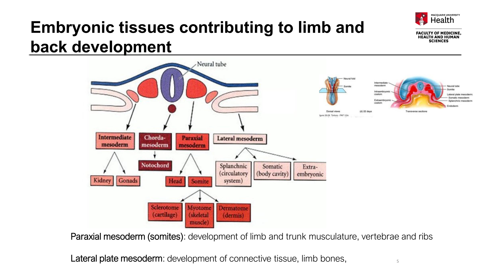
This diagram is the source of the whole axial/appendicular split from §1. Paraxial mesoderm beads into somites, and each somite gives three things — sclerotome (vertebra + rib), myotome (muscle) and dermatome (dermis). That segmental packaging is exactly why the body has dermatomes and myotomes you can map on a patient. Lateral plate mesoderm, further out, makes the limb bones, the sternum and the connective tissues.
SLIDE 35Development of somites
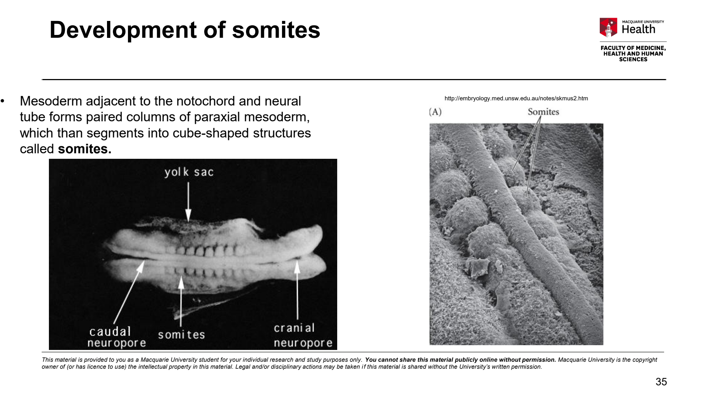
Somites are laid down head-to-tail on a molecular timer (a "segmentation clock"), ~42–44 pairs, each the blueprint for one body segment. Note the cranial and caudal neuropores labelled on the slide — the open ends of the neural tube. They close around day 25–27, and failure to close is precisely what produces the neural tube defects at the end of the lecture (§7).
SLIDE 36Sclerotome migration → the vertebra
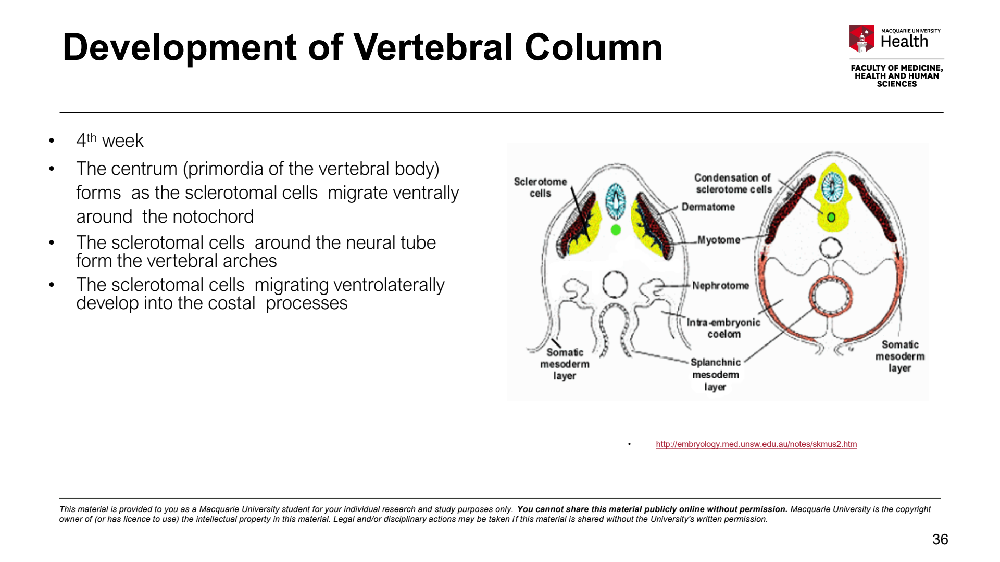
The notochord is the organiser here: it signals the nearby somite to release its sclerotome, which migrates in three streams — ventrally around the notochord to build the centrum (body), dorsally around the neural tube to build the arch, and ventrolaterally as the costal process. Those three streams are why the adult vertebra has three parts and ossifies from three centres — and why defects tend to hit one part at a time (§7).
SLIDE 37Fate of the costal processes
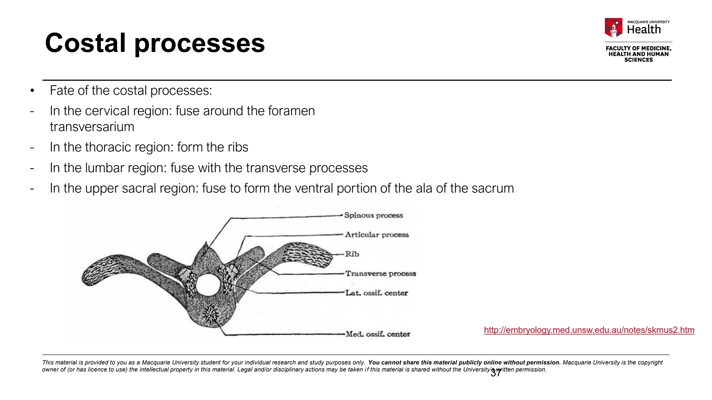
This one slide explains three adult facts at once. The costal process becomes a true rib only in the thorax; in the neck it curls around to help enclose the foramen transversarium (so a cervical "transverse process" is really transverse process + fused rib — and the hole it makes carries the vertebral artery); in the lumbar region it fuses onto the transverse process; in the upper sacrum it forms the ala. And if the cervical costal element fails to stay small and overgrows, you get a cervical rib — the anomaly in §7.
SLIDE 38Development of the sternum
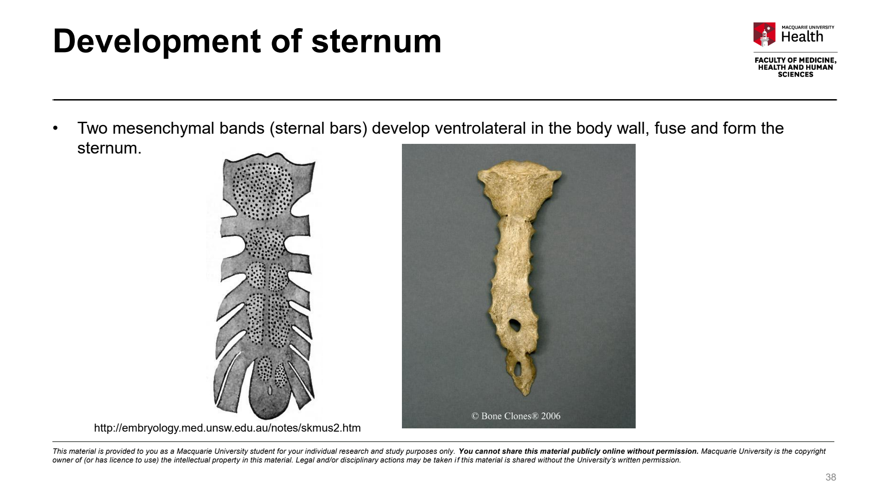
Two mesenchymal sternal bars form out in the ventral body wall (lateral plate tissue, not somite) and fuse in the midline from the top down, like a zip. Incomplete fusion leaves a sternal cleft or foramen (which can masquerade as a lytic lesion on a chest film), and disordered growth of the sternum and its costal cartilages underlies the pectus deformities of §7.
SLIDE 39Resegmentation — the key idea
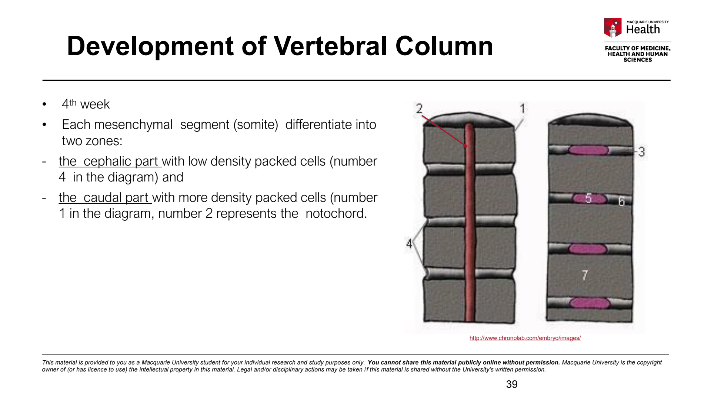
Here is the step everything hinges on. Each sclerotome splits into a loose-packed cranial half and a dense-packed caudal half. A definitive vertebra is then built from the dense caudal half of one somite fused to the loose cranial half of the next — so every vertebra is a composite of two adjacent somites and ends up intersegmental: offset by half a segment from the original somite boundaries. The notochordal material trapped between the forming bodies becomes the disc centre.
SLIDE 40Why resegmentation matters
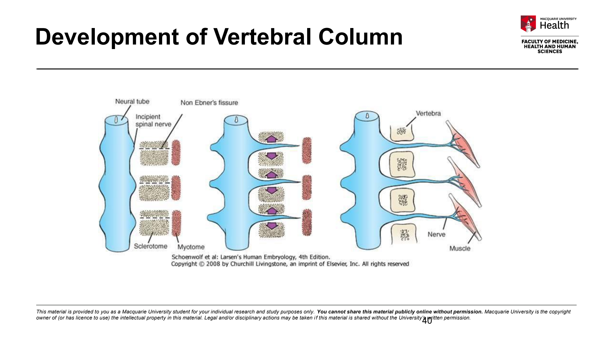
And this is the payoff — the reason the shuffle is worth it. Because the vertebrae are now out of phase with the segments, the still-segmental spinal nerves exit between vertebrae (through the intervertebral foramina), and each segmental myotome bridges across a joint from one vertebra to the next. A muscle anchored on two different vertebrae can now pull one on the other — in other words, resegmentation is what makes the spine mobile. (The intersegmental arteries end up crossing the vertebral bodies as the segmental/lumbar arteries, for the same reason.)
SLIDE 41Intervertebral discs (symphyses)
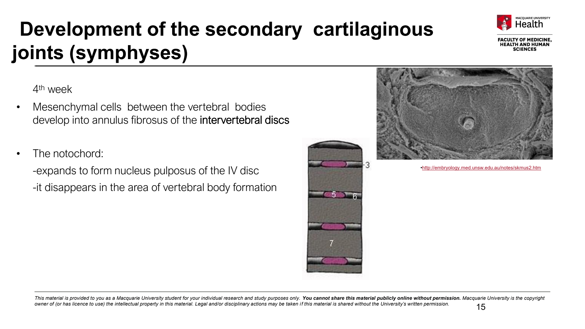
The disc has two parts with two origins. Mesenchyme between the bodies lays down the annulus fibrosus — concentric rings of collagen that resist twisting. The notochord, squeezed out of the vertebral bodies, survives only in the gaps, where it swells into the gelatinous nucleus pulposus — the only adult remnant of the notochord. The nucleus is a water-filled hydraulic cushion; the annulus is its retaining wall.
Clinical · why discs herniate backward
The annulus is thinnest posterolaterally and the posterior longitudinal ligament is narrow there, so a degenerating nucleus escapes in that direction — straight onto the traversing nerve root. That geometry is why an L4/5 herniation usually pinches the L5 root, and why sciatica follows a dermatome.
SLIDE 42Cartilaginous stage
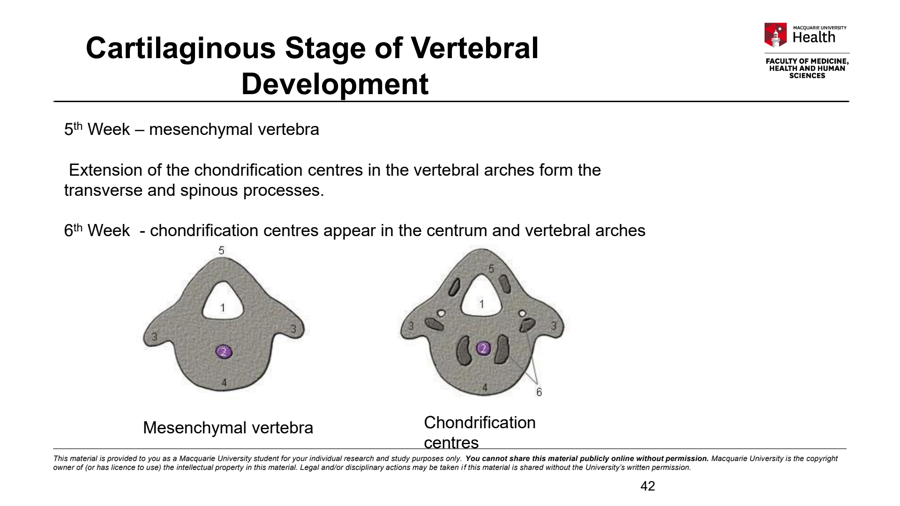
The mesenchymal vertebra is first turned into a cartilage model (chondrification) before any bone appears — the standard endochondral route. If the two chondrification centres in the centrum fail to unite, you get a sagittal cleft — the "butterfly vertebra" seen on imaging.
SLIDE 43Ossification of vertebrae
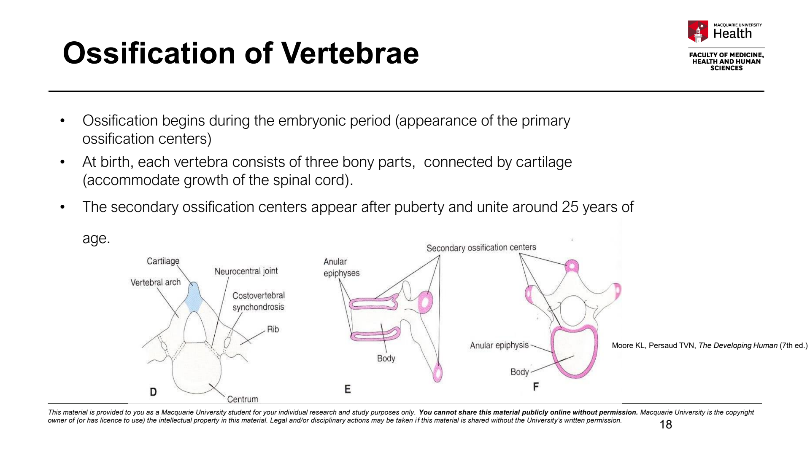
Three primary centres (one in the centrum, one in each half of the arch) are joined by cartilage neurocentral synchondroses — deliberately, so the bony ring can keep widening as the spinal cord grows; they fuse in early childhood. Secondary centres (the ring-shaped anular epiphyses on the body rims and the tips of the processes) appear at puberty and fuse by about 25. A failed primary centre is the origin of the hemivertebra in §7.
§6.1Development of the back muscles
The same somite that built the bone builds the muscle, from its myotome — and a single split in that myotome dictates the innervation of the entire trunk.
SLIDE 44Myotome → epaxial & hypaxial
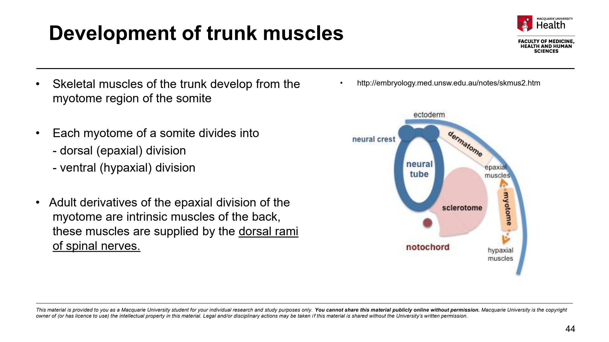
Every myotome divides into a dorsal epaxial part and a ventral hypaxial part, and the nerve follows the muscle: the epaxial cells (the future intrinsic back muscles) keep the dorsal ramus, while everything hypaxial takes the ventral ramus. This is the whole explanation for the §2 fact that only the true back muscles are dorsal-ramus muscles — and for why the "extrinsic" back muscles, being hypaxial immigrants, are supplied by ventral rami.
SLIDE 45Epaxial derivatives — the deep back
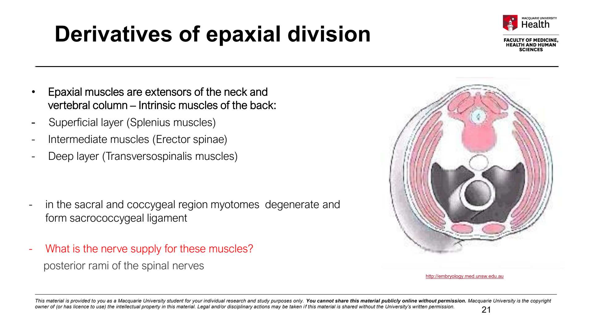
The epaxial muscles are the extensors of the spine, in three layers getting deeper and shorter: superficial splenius; intermediate erector spinae (iliocostalis–longissimus–spinalis, lateral to medial — "I Love Spine"); and deep transversospinalis (semispinalis, multifidus, rotatores), the short oblique muscles that stabilise segment-on-segment. These are the muscles that go into spasm in a "back strain," and multifidus wasting is a hallmark of chronic low-back pain. All dorsal rami.
SLIDE 46Hypaxial derivatives — body wall
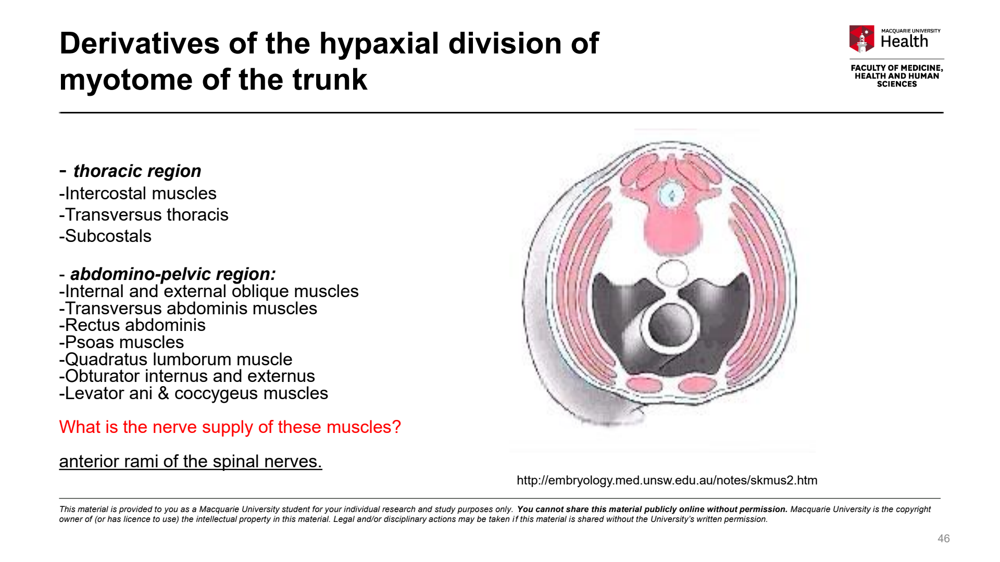
The hypaxial part builds the body wall — the intercostals in the thorax, and their continuation into the three flat abdominal sheets (external oblique, internal oblique, transversus abdominis) plus rectus below. Read them as the same segmental plan carried ventrally. All ventral rami.
Exam hook · the one table to own
Epaxial → intrinsic back muscles → dorsal rami.Hypaxial → body-wall & limb muscles → ventral rami. Almost every "nerve supply" question in this block is testing that single contrast.
Sclerotome around the notochord makes — the centrum (body)
Resegmentation —caudal half of one + cranial half of the next → an intersegmental vertebra
Resegmentation enables — the spine to move (nerves exit between, muscles span the joint)
Nucleus pulposus is — the only adult remnant of the notochord
Three primary centres joined by —neurocentral synchondroses (let the canal grow)
Epaxial →dorsal rami; hypaxial →ventral rami
§7LO6 · Common developmental abnormalities
Developmental abnormalities
§6 run backwards — each defect is a named step that failed.
Everything here is predictable from the development you just learned. Tag each anomaly with the step that went wrong, and you never have to rote-learn the list.
SLIDE 48Three categories of abnormality
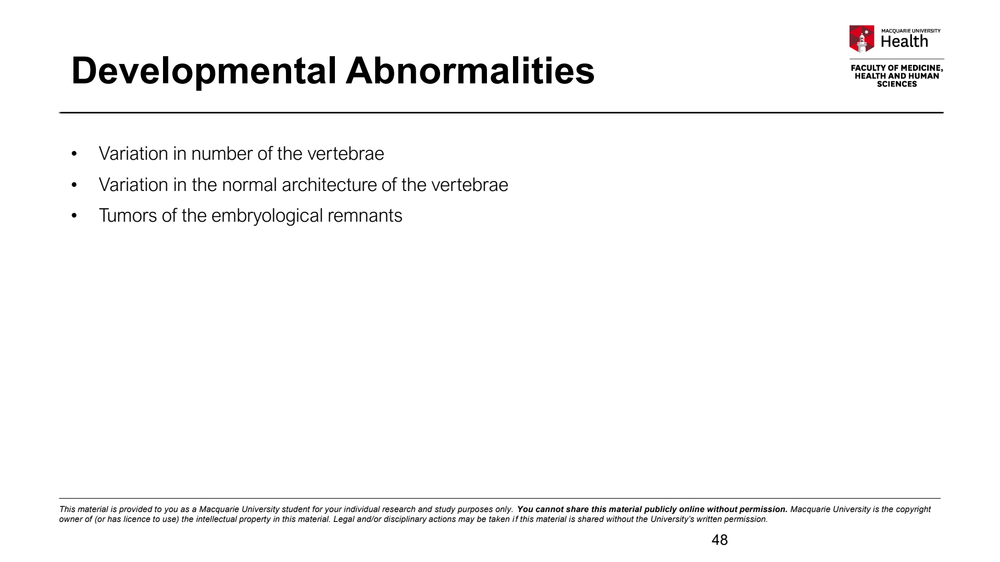
Map the three buckets onto §6: variation in number = somite formation/number went wrong; variation in architecture = chondrification (formation) or segmentation failed; tumours = embryonic remnants (primitive streak or notochord) that never disappeared. That's the whole section in one sentence.
SLIDE 49Brevicollis — Klippel-Feil syndrome
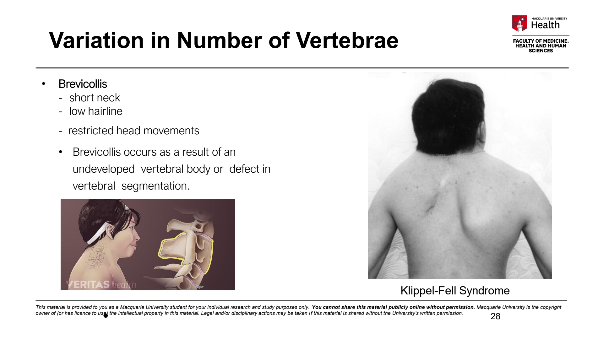
Klippel-Feil is a failure of segmentation of the cervical somites → fused cervical vertebrae, giving the classic triad: short neck, low posterior hairline, restricted neck movement. Because a somite-level insult rarely stays local, it travels with other anomalies — Sprengel's high scapula, scoliosis, and renal or hearing defects — worth a mention for marks.
SLIDE 50Variation in number of ribs — accessory rib
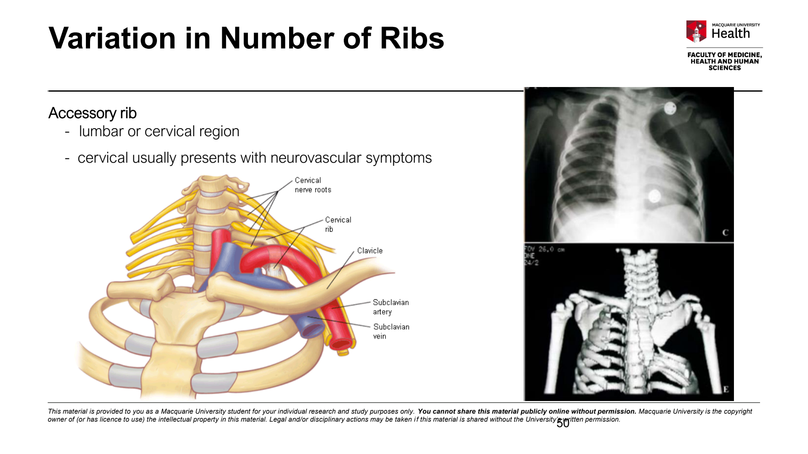
An accessory rib is a costal element that overgrew where it normally stays small (§37). A cervical rib (off C7) matters because it crowds the thoracic outlet: it compresses the lower brachial plexus (C8/T1) → wasting of the small hand muscles and ulnar-border numbness, and/or the subclavian artery → arm claudication, even emboli. A lumbar rib is usually just an incidental finding.
SLIDE 51Pectus excavatum & carinatum
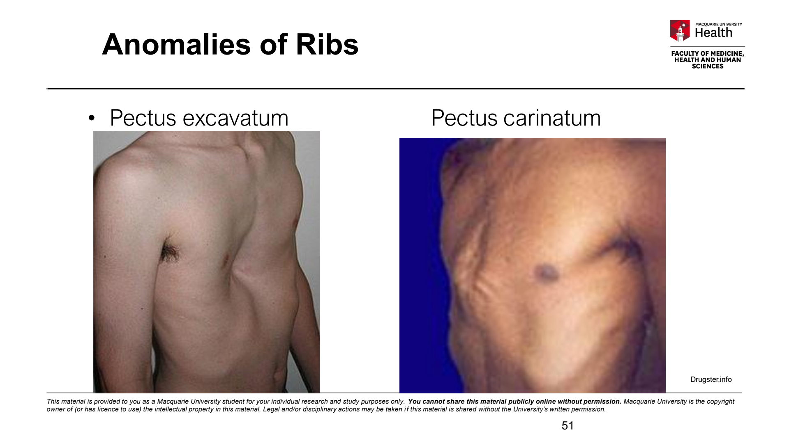
Both are costal-cartilage overgrowth buckling the sternum — inward (excavatum, "funnel chest") or outward (carinatum, "pigeon chest"). Severe excavatum can crowd the heart and cut exercise tolerance (repaired with a Nuss bar), and both associate with connective-tissue disorders such as Marfan syndrome — the §38 sternal-development story gone slightly wrong.
These "transitional vertebrae" sit at the lumbosacral border: sacralization fuses L5 into the sacrum (a false joint here, Bertolotti syndrome, is a recognised cause of low-back pain), while lumbarization frees S1 to act as a sixth lumbar vertebra. Clinically they matter most because they make you miscount levels — a real hazard before spinal surgery or an injection.
SLIDE 53Hemivertebra
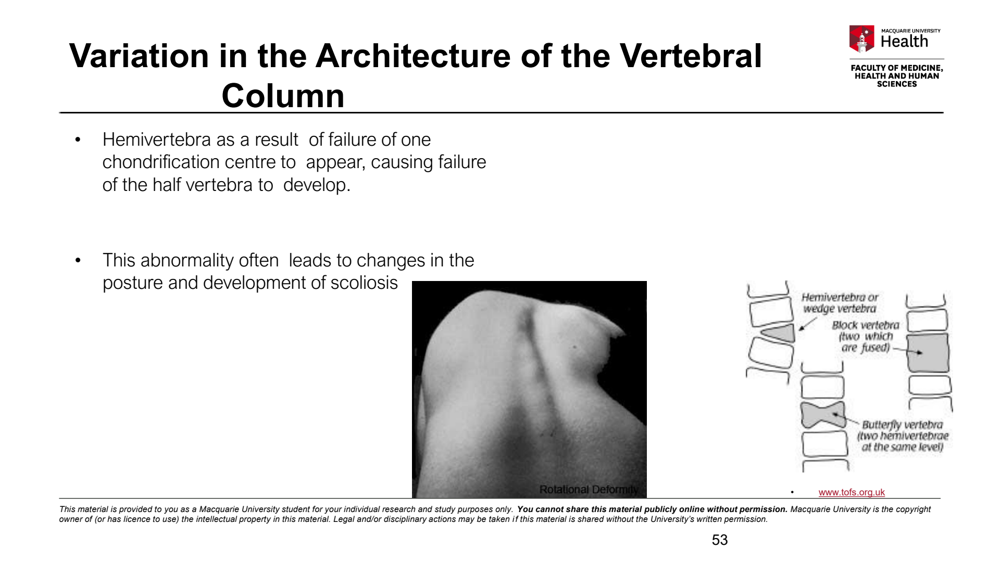
This is the pure failure of formation: one chondrification/ossification centre never appears, so only half the vertebra forms — a wedge that tilts the column into a congenital scoliosis. Because the healthy side keeps growing, it tends to progress with the child, which is why congenital curves are often operated early.
SLIDE 54Block vertebra & the formation/segmentation spectrum
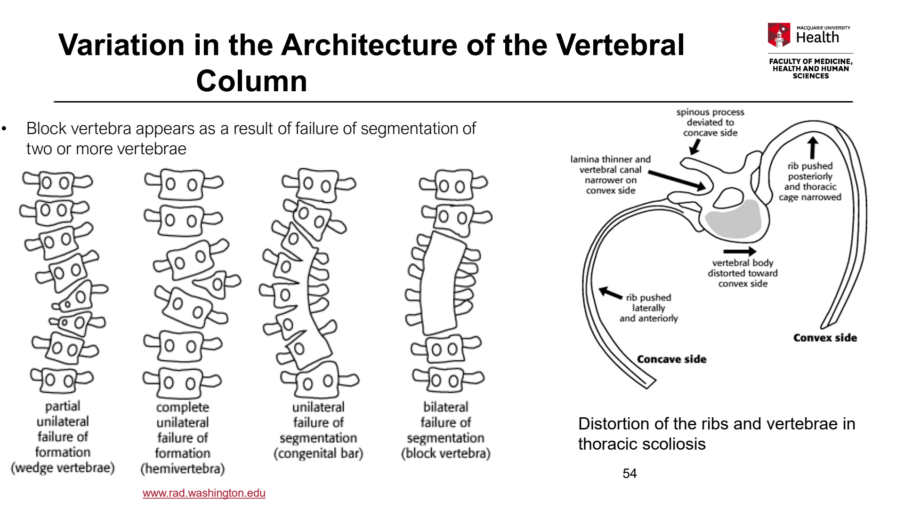
Read the row left to right as the master classification. On the left, failure of formation (wedge, hemivertebra); on the right, failure of segmentation — a one-sided congenital bar (which, like a hemivertebra, grows asymmetrically into scoliosis) or a symmetrical block vertebra (two or more fused, usually a short stiff but balanced segment). Everything in vertebral dysmorphology sorts into "didn't form" versus "didn't separate."
SLIDE 55Congenital kyphosis
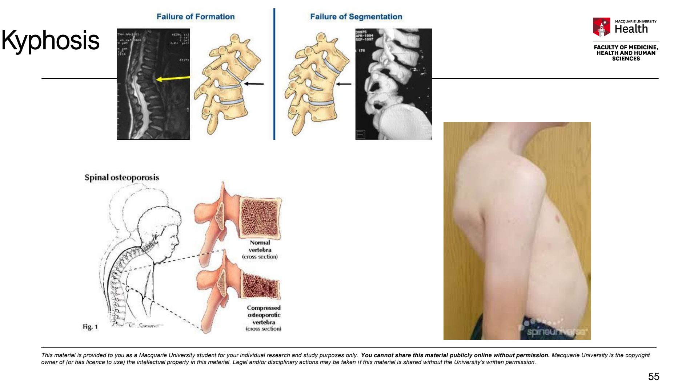
The same two failures, read in the sagittal plane, tip the spine forward instead of sideways. An anterior failure of formation makes a sharp angular gibbus that can threaten the cord. The osteoporotic collapse shown alongside is the acquired adult route to the same shape — useful to contrast congenital versus degenerative kyphosis.
§7.1Spina bifida — a spectrum of neural-arch failure
When the posterior neural arch(es) fail to fuse, the result runs from a harmless gap to an open cord. The next four slides climb that ladder.
SLIDE 56Spina bifida occulta
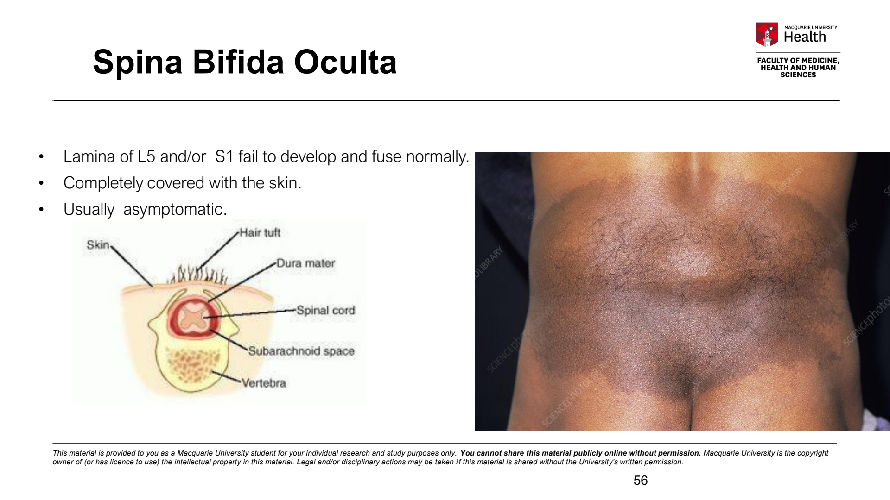
The mildest and commonest form (present in perhaps 10–20% of people, usually an incidental X-ray finding): only the laminae of L5/S1 fail to fuse, the cord is normal, and skin covers the gap. The giveaway is a tuft of hair, a dimple or a lipoma over the lower back — markers worth noticing because they occasionally signal an underlying tethered cord.
SLIDE 57Spina bifida cystica
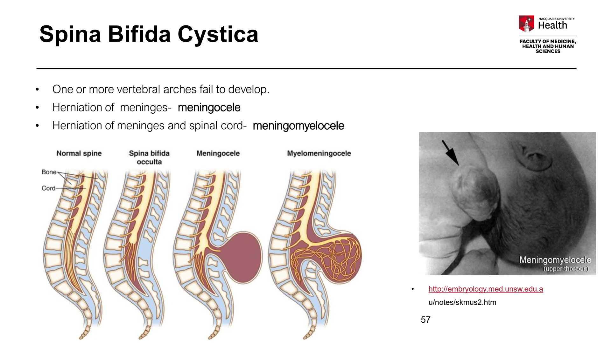
Here a sac actually herniates through the defect, and the contents decide the prognosis: a meningocele contains only meninges and CSF, with the cord in place, so deficits may be mild; a meningomyelocele (myelomeningocele) drags neural tissue into the sac, giving deficits below the lesion. These are open defects, which is why they raise alpha-fetoprotein in maternal blood and amniotic fluid.
SLIDE 58Spina bifida — the full spectrum
The single image to anchor the severity ladder: normal → occulta → meningocele → myelomeningocele. The level of the lesion sets the deficit (lumbosacral is commonest), and myelomeningocele is now sometimes repaired by fetal surgery before birth.
Severe lesions knock out everything below the level — leg paralysis, neurogenic bladder and bowel, recurrent CNS infection (and, via the associated Chiari II malformation, hydrocephalus). The prevention point is the exam favourite and worth the why:
Clinical · why folic acid, and why early
The neural tube closes at about day 28 — often before a woman knows she's pregnant — so folic acid only works if started periconceptionally (0.4 mg routinely, 5 mg if a previous affected child or on antiepileptics). Flour fortification has measurably cut incidence. Screening: a raised alpha-fetoprotein plus ultrasound.
SLIDE 60Tumours of embryonic remnants
Two remnants, two very different tumours. A teratoma arises from pluripotent primitive-streak cells, so it can contain any of the three germ layers' tissues — hair, teeth, gut, bone — and the sacrococcygeal teratoma is the commonest tumour of the newborn. A chordoma grows from notochord that never disappeared: a slow but locally destructive malignancy at the two ends of the old notochord — the clivus/skull base and the sacrum. It's the malignant echo of the nucleus pulposus from §41 — the perfect bookend to the notochord story.
R Recall — developmental abnormalities
Failure of formation →hemivertebra (wedge) → scoliosis
Failure of segmentation →block vertebra / congenital bar
Klippel-Feil — failed segmentation of cervical somites → short neck
Cervical rib compresses — the lower brachial plexus (C8/T1) and subclavian vessels
Transitional vertebrae —sacralization of L5 / lumbarization of S1 → miscounting levels
Prevent with — periconceptional folic acid; screen with alpha-fetoprotein
Chordoma from — the notochord; teratoma from the primitive streak
Built from: MHHS2401 Lecture 17 — Introduction to trunk anatomy and development of the back (Dr M. Strkalj), Macquarie University. Personal study aid: the lecture's own slides, each explained in depth. Not for redistribution.
All 53 content slides covered, in order. Click any slide to enlarge; quote a code (e.g. §4.2) to go deeper, or hit Generate quiz (top) to spin one up from this guide.
scroll or +/− to zoom · drag to reposition · Esc to close